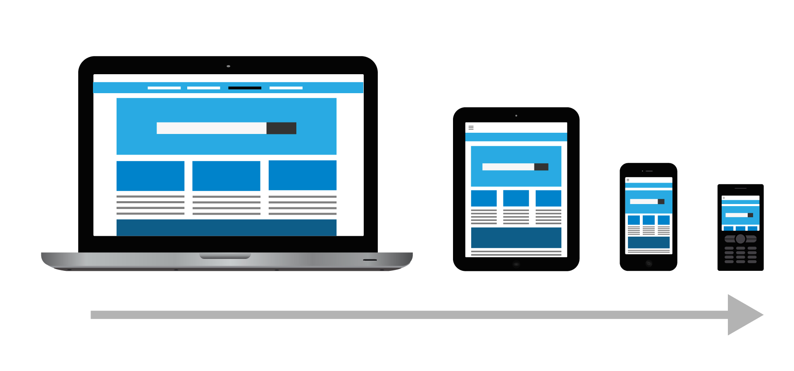
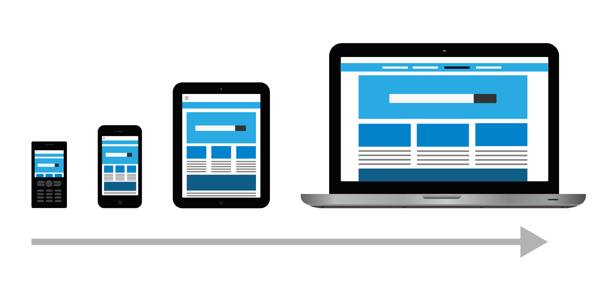

Conceptos
Graceful Degradation
Es una estrategia y un principio importante en el manejo del diseño de páginas web. Esto significa que cuando se implementan funciones diseñadas para aprovechar las mejores y más recientes características de los navegadores más actuales, hay que hacerlo de manera que los navegadores antiguos, además de aquéllos que permiten a los usuarios desactivar funciones particulares, puedan “retroceder” a un método que no impida el acceso al contenido básico del sitio, aunque quizás sin una apariencia tan elegante.Es un sistema tolerante a fallos, pero no significa que le está diciendo al usuario que use los últimos dispositivos o descargue un navegador actualizado. En el enfoque de degradación elegante, desarrolla o diseña un sitio web con las mejores funciones para los últimos navegadores o dispositivos, y agrega manejadores o funcionalidad para degradar su código según sea necesario para navegadores o dispositivos menos capaces.
Casi todas las características nuevas que se añaden a la web han sido diseñadas de una manera que permitan la degradación gradual. Por eso esta técnica crea páginas para los navegadores más modernos primero y luego los convierte para trabajar con navegadores menos funcionales.
Un sitio web diseñado para que degrade gradualmente está pensado para que se vea primero correctamente en los navegadores modernos. Para que se puedan acceder en los navegadores más antiguos, y menos ricos en características deben degradar, de forma a funcionar, pero con menos características.
Progressive Enhancement
Comienza con una base sólida que funciona en todas partes, HTML, nos aseguramos de que nuestra aplicación sea utilizable para la mayor audiencia posible. Una vez que estamos seguros de que esta experiencia central es funcional para todos, podemos comenzar a aplicar el estilo y la interacción para proporcionar una mejor experiencia a los dispositivos que la admiten.
Tomar un enfoque amigable para PE significa asegurar que las funciones centrales detrás de estas acciones (por ejemplo, escribir el contenido, enviar un formulario) no dependan de archivos externos o JavaScript. Luego, en segundo plano, podemos 'progresivamente' cargar las versiones mejoradas de estas características y cambiarlas cuando estén listas. Mejor aún, podemos cargar estos activos sólo cuando sea relevante y no (por ejemplo) si no hay un editor WYSIWYG en la página.
Esto significa que los usuarios no necesitan esperar a la funcionalidad principal dentro de su aplicación. Si están en un dispositivo lento o en una conexión de red, aún pueden usar una versión simple de una función sin esperar.
cutting the mustard
Se trata de ejecutar una prueba simple cuando carga nuestro sitio web que verifica la existencia de características 'modernas' y luego carga el archivo apropiado en función del resultado. Los navegadores modernos obtienen el código moderno, los navegadores antiguos obtienen el código más grande compatible con versiones anteriores, y los navegadores muy antiguos no obtienen ninguna de las mejoras.
Linea que en nuestro codigo para dectectar en cual navegador se esta ejecutando el sitio web.

Tipos de navegadores